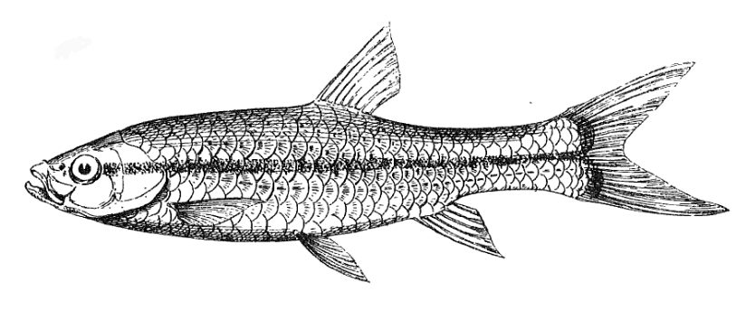

स्लेंडर रासबोरा मछलीSlender Rasbora
Rasbora daniconius · Cyprinidae · FSH-0053

- Scientific name वैज्ञानिक नाम
- Rasbora daniconius (Hamilton, 1822)
- Family कुल
- Cyprinidae
- Hindi हिंदी
- स्लेंडर रासबोरा मछली
- Local names स्थानीय नाम
- slender rasbora, rasbora machhli, daniconius, patta machhli, danikoni
- Status here यहाँ की स्थिति
- native
- Movement आवागमन
- Resident, here all year
- Known from कहाँ दर्ज
- Others have published records from the wider Awadh–Purvanchal plain, none yet from Basti–Ayodhya अवध–पूर्वांचल से दूसरों के प्रकाशित अभिलेख, बस्ती–अयोध्या से अभी नहीं
- IUCN IUCN
- not evaluated
- Review समीक्षा
- not yet reviewed
When to look कब देखें
Present all year. साल भर मौजूद।
Uses and possibilities उपयोग और संभावनाएँ
Drawn from the documented uses in the profile below, where each is labelled traditional, current or a research lead. All uses →
Tell it apart from इनसे अलग पहचानें
स्लेंडर रासबोरा मछली / Slender Rasbora
Rasbora daniconius (Hamilton, 1822) — Cyprinidae
स्लेंडर रासबोरा मछली — स्वच्छ नालों, नदियों के किनारों और शांत तालाबों में पाई जाने वाली एक छोटी, लंबी और बहुत आकर्षक देसी मछली है। इसके शरीर के बीचों-बीच आँख से लेकर पूँछ के सिरे तक एक गहरी नीली-काली चमकदार धारी होती है, जिसके ऊपर सुनहरी लकीर चमकती है। यह पानी की मध्य और ऊपरी परतों में बड़े झुंडों में तैरती है और मच्छरों के लार्वा को बड़े चाव से खाती है। यह एक्वेरियम रखने वालों के बीच बहुत प्रसिद्ध है।
Quick Identification त्वरित पहचान
| Feature | Description |
|---|---|
| Size | Small freshwater cyprinid; reaches about 15 cm TL (Froese & Pauly 2025) |
| Body Shape | Elongate, slender, subcylindrical, and moderately compressed laterally (Hamilton 1822) |
| Head & Mouth | Small head; mouth small, terminal, directed slightly upward; barbels absent (Talwar & Jhingran 1991) |
| Lateral Stripe | Bold, distinct blue-black mid-lateral stripe from eye to caudal fin tip, edged in gold (Hamilton 1822) |
| Colour | Silvery-olive dorsally, glistening silvery-white on belly with an iridescent gloss (Talwar & Jhingran 1991) |
| Dorsal Fin | Short-based, carrying 2 unbranched and 7 branched rays; inserted behind pelvics (Talwar & Jhingran 1991) |
| Scales | Moderate, smooth cycloid scales; 31 to 34 scales in complete lateral line (Talwar & Jhingran 1991) |
Field tip: Look in clear shallows and weed margins of streams, canals, and ponds. A slender, active silvery fish swimming in tight schools, with a bold continuous black stripe running along the exact middle of the body from snout to the fork of the tail, is the Slender Rasbora.
हिंदी: यह पतली, लंबी मछली है जिसकी मुख्य पहचान इसकी आँख से पूँछ तक जाने वाली एक गहरी काली-नीली सीधी धारी है। इसके मुंह पर कोई मूंछ नहीं होती।
Morphology आकारिकी
Size as given by FishBase (Froese & Pauly 2025):
| Measurement | Range | Source |
|---|---|---|
| Maximum length | 15 cm TL | Froese & Pauly (2025), FishBase |
Adult description:
Rasbora daniconius has an elongate, graceful, and moderately compressed body with nearly parallel dorsal and ventral profiles (Hamilton 1822). The head is relatively small, pointed, and slightly flattened on top, with prominent lateral eyes (Talwar & Jhingran 1991). The mouth is small, terminal, and directed slightly upward; the lower jaw bears a slight prominence at the symphysis that fits into an indentation of the upper jaw (Talwar & Jhingran 1991). Barbels are completely absent (Hamilton 1822).
The dorsal fin is short, originating noticeably behind the origin of the pelvic fins, and consists of 2 unbranched and 7 branched rays (Talwar & Jhingran 1991). The anal fin is small, carrying 2 unbranched and 5 branched rays. The pectoral fins are pointed, and the pelvic fins are small (Hamilton 1822). The caudal fin is deeply forked with equal pointed lobes. The lateral line is complete, concave downward along the belly, containing 31 to 34 cycloid scales (Talwar & Jhingran 1991).
In life, the fish displays handsome coloration (Talwar & Jhingran 1991). The back is warm olive-green with golden reflections, while the flanks and belly are shining silvery-white. The defining diagnostic feature is a distinct, continuous blue-black longitudinal stripe that begins at the posterior margin of the eye, traverses the operculum, runs straight along the lateral axis of the body, and extends right onto the middle rays of the caudal fin (Hamilton 1822). This dark band is bordered above by a narrow, gleaming metallic golden-yellow line (Talwar & Jhingran 1991). The fins are hyaline to pale yellowish, occasionally displaying orange tints at their bases during the breeding season.
हिंदी: इसका शरीर लगभग 15 सेमी तक लंबा, पतला और सीधा होता है। पीठ का रंग हल्का हरा-भूरा और पेट चांदी जैसा सफेद होता है। पूरे शरीर पर एक चौड़ी काली धारी होती है जिसके ऊपर सुनहरी लकीर चमकती है।
Behaviour & Ecology व्यवहार और पारिस्थितिकी
The Slender Rasbora is a peaceful, diurnal, and gregarious surface-to-midwater schooling fish (Talwar & Jhingran 1991). It inhabits clear to moderately turbid streams, oxbow wetlands, canals, and perennial ponds with sandy or muddy bottoms and submerged aquatic vegetation.
Schools of dozens to hundreds of individuals swim synchronously in the upper fifty centimetres of the water column (Daniels 2002). They weave gracefully through submerged beds of Hydrilla and Ceratophyllum, picking off drifting micro-invertebrates and falling terrestrial insects (Talwar & Jhingran 1991). When approached by larger predatory fishes, the school performs unified evasive sweeps before darting into weed shelters (Daniels 2002). The species displays wide ecological tolerance, enduring low dissolved oxygen and warm water temperatures in drying summer pools.
हिंदी: यह बहुत शांत और मिलनसार मछली है जो पानी की मध्य परतों में बड़े झुंड बनाकर तैरती है। यह पानी में तैरते पौधों के बीच छिपती है और पानी में गिरने वाले कीड़ों को खाती है।
Life Cycle / Phenology जीवन चक्र
Seasonal phenology in northern Indian alluvial waters across the agricultural year (Talwar & Jhingran 1991; Daniels 2002):
| Season / Month | Stage | Field Observation |
|---|---|---|
| July–August (Kharif monsoon) | Spawning & courtship | Pairs spawn among submerged weed beds in flooded shallows (Talwar & Jhingran 1991) |
| September–November (Post-monsoon) | Juvenile growth | Fry school in dense aquatic vegetation feeding on rotifers (Daniels 2002) |
| December–February (Rabi winter) | Sub-adult schooling | Dense aggregations assemble in sunny oxbow pools and perennial tanks (Talwar & Jhingran 1991) |
| March–May (Summer / Zaid) | Midwater foraging | Intense feeding on midges and algae as water warms (Daniels 2002) |
| June (Pre-monsoon) | Pre-spawning congregation | Gravid females with swollen golden bellies assemble near inlets |
Breeding takes place during the monsoon rains from July to August (Talwar & Jhingran 1991). Courtship occurs in vegetated shallows where males actively pursue ripe females. Females scatter small, adhesive eggs among submerged aquatic plant stems and fine roots. The eggs hatch after a few days into tiny transparent larvae that cling to plant leaves before developing into free-swimming, plankton-feeding fry (Daniels 2002).
हिंदी: बरसात के समय यह जलीय पौधों की पत्तियों पर अंडे देती है। कुछ ही दिनों में बच्चे निकल आते हैं और वे पानी के सूक्ष्म जीवों को खाकर तेजी से बड़े होते हैं।
Diet and Feeding Behaviour आहार
Rasbora daniconius is an opportunistic omnivore with a strong preference for aquatic and terrestrial insects (Talwar & Jhingran 1991):
Natural diet components:
- Mosquito larvae and pupae (Culex, Anopheles, and Aedes), captured near the surface (Daniels 2002).
- Small terrestrial insects trapped in surface tension, including winged ants, aphids, and midges (Talwar & Jhingran 1991).
- Chironomid midge larvae and aquatic nymphs inhabiting weed beds.
- Planktonic micro-crustaceans, including cladocerans (Daphnia, Moina) and copepods.
- Filamentous algae, diatoms, and soft organic detritus browsed from submerged plant leaves.
हिंदी: यह पानी की सतह के मच्छरों के लार्वा, पानी में गिरने वाले कीड़ों, सूक्ष्म प्लवक और काई को खाती है। यह मच्छरों की प्राकृतिक रोकथाम में बहुत सहायक है।
Predators / Natural Enemies शत्रु
Documented natural predators in northern Indian alluvial freshwater systems:
- Piscivorous fishes: Snakeheads like Channa punctata (Spotted Snakehead), catfishes like Mystus tengara (Tengra Catfish) and Wallago attu (Striped Catfish), and garfish Xenentodon cancila (Freshwater Garfish) prey heavily on schooling rasboras.
- Wading birds: Pond herons, little egrets, and common kingfishers capture schools in shallow weed beds.
- Aquatic snakes: Keelbacks pursue schools among submerged plants.
- Predatory diving bugs: Ambush juveniles in dense weed nurseries.
हिंदी: गिरई, टेंगरा, बोआल और सुइया मछली इस पर हमला करती हैं। बगुले और किंगफिशर पानी की सतह से इसे पकड़ लेते हैं।
Agricultural / Human Relevance कृषि प्रासंगिकता
Natural mosquito vector control: The Slender Rasbora is widely acknowledged by public health entomologists as one of the most effective native larvivorous fishes in the Indian subcontinent (Talwar & Jhingran 1991). Introducing schools into rural village tanks, ornamental fountains, and agricultural water storage pits significantly reduces mosquito breeding without the need for harmful chemical insecticides (Daniels 2002).
Aquarium and food value: A classic, hardy, and peaceful aquarium fish that has been celebrated globally in the ornamental trade for over a century. In rural eastern Uttar Pradesh, it is also caught in fine-mesh nets from rivers and tals, cooked whole, and consumed as an affordable, nutrient-rich food fish rich in calcium, vitamin A, and protein.
Traditional: Consumed as an everyday small food fish in rural riverbank villages across Awadh.
Today: Highly valued in the ornamental aquarium fish industry and utilized in biological mosquito control programs.
Research direction (a lead, not a result): Investigating field stocking protocols for Rasbora daniconius in community wastewater oxidation ponds to suppress urban mosquito breeding.
हिंदी: यह मछली मच्छरों के लार्वा को बड़े पैमाने पर खाकर मलेरिया और डेंगू जैसी बीमारियों की रोकथाम में बहुत मदद करती है। अपनी सुंदरता के कारण यह एक्वेरियम में भी बहुत पसंद की जाती है।
Expected Locally स्थानीय रूप से अपेक्षित
Not a field record. Written from published accounts for eastern Uttar Pradesh. No confirmed local sighting yet — if you have seen it, that is what the atlas needs.
अभी तक स्थानीय पुष्टि नहीं। यह विवरण प्रकाशित स्रोतों से है, किसी अवलोकन से नहीं।
The Slender Rasbora is expected across eastern Uttar Pradesh in clear perennial streams, oxbow lakes (tals), weed-rich village tanks, and irrigation canals. Look in sunny shallows and along vegetated shorelines from August through December. GBIF holds published records from the wider Awadh–Purvanchal plain, none yet from Basti–Ayodhya. A clear photograph showing the slender body and bold black mid-lateral stripe edged in gold, submitted via the About page, would confirm the first local documentation for the project area.
Distribution वितरण
Global range: Widespread across South and Southeast Asia, natively occurring in India, Pakistan, Nepal, Bangladesh, Sri Lanka, Myanmar, and the Mekong basin (Talwar & Jhingran 1991).
In India: Distributed throughout the Indus, Ganges, Brahmaputra, Mahanadi, Godavari, Krishna, and Cauvery river drainages, from foothill streams to the plains (Menon 1999).
In Uttar Pradesh: Recorded throughout the Ganges, Ghaghara, Rapti, Gomti, and Sarda basins in oxbow lakes and perennial streams.
In Basti district / eastern UP: Expected as an abundant resident native in the Kuwano, Manwar, and Ghaghara drainage networks and perennial wetlands.
हिंदी: यह भारत, पाकिस्तान, नेपाल, बांग्लादेश और श्रीलंका में पाई जाती है। उत्तर प्रदेश में यह तालाबों, तालों और नहरों में बहुत सामान्य रूप से उपस्थित है।
Research Questions शोध प्रश्न
- What is the daily predation rate of Rasbora daniconius on Culex tritaeniorhynchus larvae across varying water temperatures? / तापमान बदलने पर यह मछली मच्छरों के लार्वा को किस दर से खाती है?
- How do seasonal pesticide applications in adjacent paddy fields affect school cohesion and swimming performance?
- What are the specific visual cues used by Rasbora daniconius to recognize conspecifics in turbid waters? / मटमैले पानी में यह मछली अपने झुंड के साथियों को कैसे पहचानती है?
- Can community health initiatives establish low-cost rearing tanks for Rasbora daniconius in rural primary health centers?
- How does the removal of submerged macrophyte beds impact egg survival in village tanks?
Similar Species मिलती-जुलती प्रजातियाँ
| Species | How to tell apart | हिंदी | |
|---|---|---|---|
| Danio rerio ([[zebrafish\ | Zebrafish]]) | Marked with multiple horizontal blue and gold stripes across entire body and caudal fin; barbels present | जेब्राफिश — पूरे शरीर पर कई नीली और सुनहरी धारियाँ होती हैं; मुंह पर मूंछें होती हैं |
| Devario devario ([[sind_danio\ | Sind Danio]]) | Body deep and rhomboidal; blue stripes restricted to posterior half; dorsal fin base much longer (15–18 branched rays) | सिंध डैनियो — शरीर चौड़ा होता है और नीली धारियाँ केवल पिछले हिस्से पर होती हैं |
| Amblypharyngodon mola ([[mola_carplet\ | Mola Carplet]]) | Body deeper and more compressed; lacks the bold black longitudinal stripe; mouth wide | मोला कार्पलेट — शरीर चौड़ा होता है और इस पर कोई काली धारी नहीं होती |
Field rule: A slender, elongate silvery cyprinid lacking barbels, marked with a bold continuous blue-black mid-lateral stripe edged in gold running from eye to caudal tip, is Rasbora daniconius.
हिंदी: जेब्राफिश के पूरे शरीर पर कई धारियाँ होती हैं और सिंध डैनियो का शरीर चौड़ा होता है, जबकि स्लेंडर रासबोरा पतली होती है और उसके शरीर के बीचों-बीच सिर्फ एक सीधी काली धारी होती है।
Taxonomy & Classification वर्गीकरण
Original description. Described by Francis Hamilton in 1822 as Cyprinus daniconius in An Account of the Fishes Found in the River Ganges and Its Branches, page 327. Type locality: Rivers of southern Bengal.
Subspecies. Monotypic in modern taxonomic frameworks. Regional forms formerly designated as subspecies have been synonymized with the nominotypical taxon (Menon 1999).
Family and order placement. Order Cypriniformes, family Cyprinidae, subfamily Danioninae (or Rasborinae). The genus Rasbora Bleeker, 1859, comprises slender, surface-oriented Asian minnows.
Phylogenetic notes. Rasbora daniconius is the type species of the daniconius species-complex, distinguished from allied rasboras by its complete lateral line and characteristic single mid-lateral stripe extending onto the caudal rays (Talwar & Jhingran 1991).
IUCN status rationale. Not evaluated (NE) on the global IUCN Red List of Threatened Species. It maintains widespread, abundant, and secure populations throughout South Asia.
हिंदी: इसका वैज्ञानिक नाम Rasbora daniconius है और यह Cyprinidae परिवार की Danioninae उपपरिवार की सदस्य है। प्रकृति में इसकी संख्या बहुत सुरक्षित है।
Photo Gallery फोटो गैलरी
No photos yet — add field photos to media/species/slender_rasbora/ and run node scripts/sync_photos.js.
Photos needed आवश्यक फोटो
- [ ] Lateral view of adult showing bold blue-black mid-lateral stripe and golden edge (काली धारी और सुनहरी चमक की तस्वीर)
- [ ] School of live fish swimming in clear water among aquatic plants (जलीय पौधों के बीच तैरता झुंड)
- [ ] Close-up of head showing terminal mouth and absence of barbels (मुंह और सिर की बनावट)
- [ ] Dorsal view showing slender streamlined body contour (ऊपर से पतले शरीर का दृश्य)
References संदर्भ
- Hamilton, F. (1822). An Account of the Fishes Found in the River Ganges and Its Branches. Archibald Constable and Company, Edinburgh, p. 327.
- Talwar, P. K. & Jhingran, A. G. (1991). Inland Fishes of India and Adjacent Territories, Vol. 1. Oxford & IBH Publishing Co., New Delhi, pp. 398–399.
- Menon, A. G. K. (1999). Check list - fresh water fishes of India. Records of the Zoological Survey of India, Occasional Paper No. 175, p. 48.
- Daniels, R. J. R. (2002). Freshwater Fishes of Peninsular India. Universities Press, Hyderabad, pp. 72–74.
- Froese, R. & Pauly, D. (Eds.) (2025). FishBase. World Wide Web electronic publication.
- GBIF Occurrence Data — Rasbora daniconius, India (2025).
Source file: species/fauna/fish/slender_rasbora.md